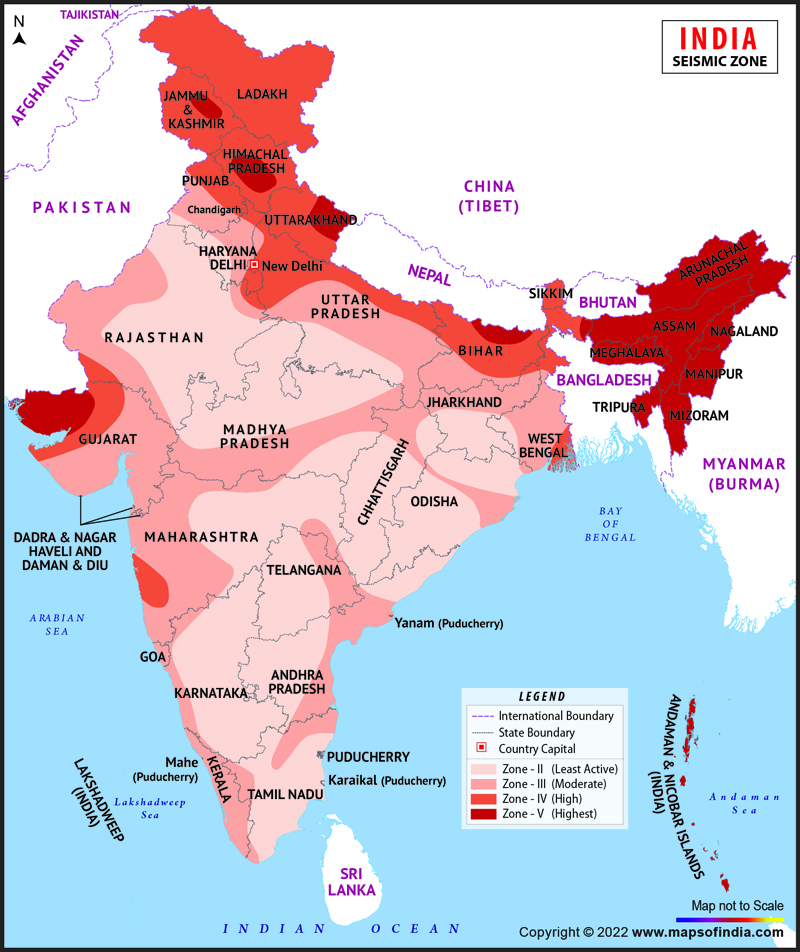

An earthquake is a phenomenon that occurs without warning and involves violent shaking of the ground and everything over it. It results from the release of accumulated stress of the moving lithospheric or crustal plates that creates seismic waves.The occurrence of an earthquake in a populated area may cause numerous casualties and injuries as well as extensive damage to property.
Earthquake Magnitude Scale
Magnitude is expressed in whole numbers and decimal fractions. For example, a magnitude 5.3 is a moderate earthquake, and a 6.3 is a strong earthquake. Because of the logarithmic basis of the scale, each whole number increase in magnitude represents a tenfold increase in measured amplitude as measured on a seismogram.
| Magnitude | Earthquake Effects | Estimated Number Each Year |
|---|---|---|
| 2.5 or less | Usually not felt, but can be recorded by seismograph. | Millions |
| 2.5 to 5.4 | Often felt, but only causes minor damage. | 500,000 |
| 5.5 to 6.0 | Slight damage to buildings and other structures. | 350 |
| 6.1 to 6.9 | May cause a lot of damage in very populated areas. | 100 |
| 7.0 to 7.9 | Major earthquake. Serious damage. | 10-15 |
| 8.0 or greater | Great earthquake. Can totally destroy communities near the epicenter. | One every year or two |
Earthquake zone map of India
This kind of map is mainly used by the Department of Disaster Management of the different state governments in the country. This map helps them in planning for a natural disaster like earthquake. An Indian seismic zoning map assists one in identifying the lowest, moderate as well as highest hazardous or earthquake prone areas in India.This in turn results in saving life in the long run.
As per the seismic zoning map of the country, the total area is classified into four seismic zones.A total of ~59% of the land mass of India (covering all states of India) is prone to earthquakes of different intensities.
| Zone | Damage Intensity | Affected Regions |
|---|---|---|
| II | Low Damage Risk Zone | Cities like Bangalore, Hyderabad, Visakhapatnam, Nagapur, Raipur, Gwalior, Jaipur, Tiruchirappalli, Madhurai are in this zone. |
| III | Moderate Damage Risk Zone | Megacities like Chennai, Mumbai, Kolkata and Bhubaneshwar, Jamshedpur, Ahmedabad, Pune, Surat, Lucknow, Vadodara, Mangalore, Vijayawada and the entire state of Kerala lie in this zone. |
| IV | High Damage Risk Zone | Jammu and Kashmir, Ladakh, Himachal Pradesh, Uttarakhand, Sikkim, parts of the Indo-Gangetic plains (North Punjab, Chandigarh, Western Uttar Pradesh, Terai, a major portion of Bihar, North Bengal, the Sundarbans) and the capital of the country Delhi fall in Zone 4. In Maharashtra, the Patan area (Koynanagar) is also in Zone 4. |
| V | Very High Damage Risk Zone | The regions of Kashmir, the Western and Central Himalayas, North and Middle Bihar, the North-East Indian region, the Rann of Kutch and the Andaman and Nicobar group of islands fall in this zone. |
Do's and Don'ts
Before an Earthquake
- Follow and advocate local safe building codes for earthquake-resistant construction.
- Follow and advocate upgrading poorly built structures.
- Identify the medical centers, fire fighting stations and organize rescue mock drills for the society of your area.
- Heavy objects, glasses, cutlery should be kept on lower shelves.
During an Earthquake
- Keep calm and reassure others.
- Do not keep dying and low-hanging branches of trees near your premises.
- Do not panic.
- If you are indoors, take cover under a desk, table, bed, or doorways and against inside walls and staircase. Stay away from glass doors, glass panes, windows, or outside doors. Do not rush to go out of the building, to avoid the stampede.
- If you are outside, move away from buildings and utility wires.
- If you are in a moving vehicle, stop as quickly as possible and stay in the vehicle.
- Put out all fires.
- Free all domestic animals so that they can run outside.
After an Earthquake
- Do not spread and believe rumors.
- Keep stock of drinking water, foodstuff and first-aid equipment in accessible place.
- Provide help to others and develop confidence.
- Do not operate electrical switches or appliances, if gas leaks are suspected.
- Close the valve of the kitchen gas stove, if it is on.Do not use open flames.
- Check water pipes, electric panels and fittings. If damaged, shut off the main valves. Do not touch PVE wires of electricity.
- If needed, open doors and cup boards carefully as objects may fall.
Emergency Kit
- First aid kit and essential medicines
- Torch(Battery operated)
- Portable, battery-operated Radio
- Spare batteries
- Important documents (Ration card,Aadhar card, Insurance, Birth certificates etc)
- List of emergency contacts
- Emergency food (dry items) and water (packed and sealed)
- Spare house and car keys
- Sturdy shoes/li>